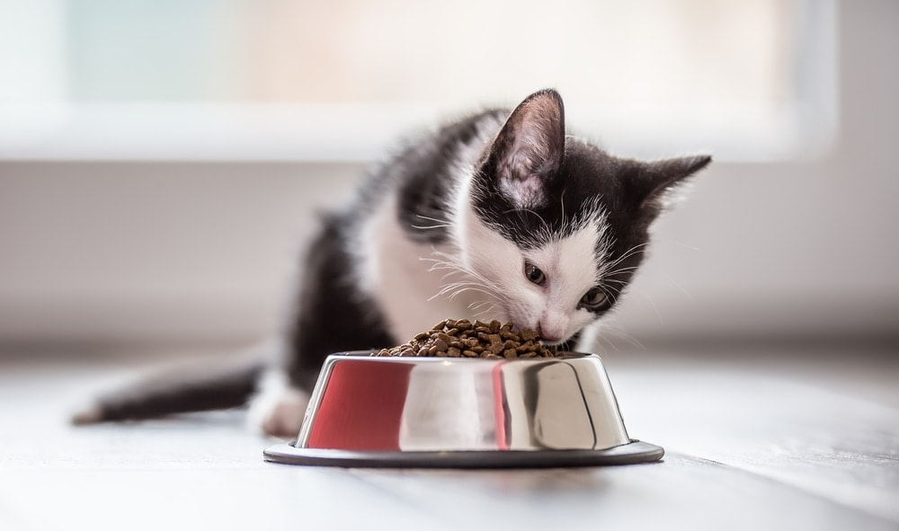
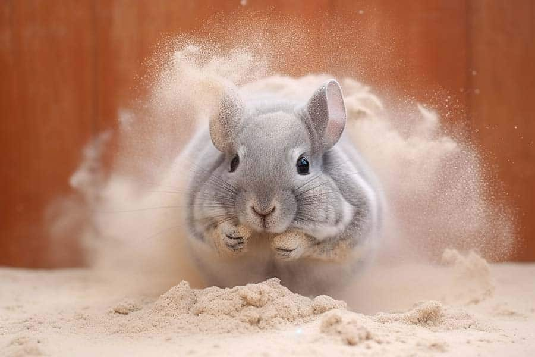
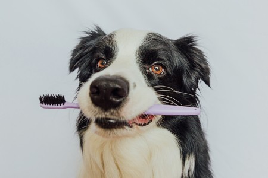
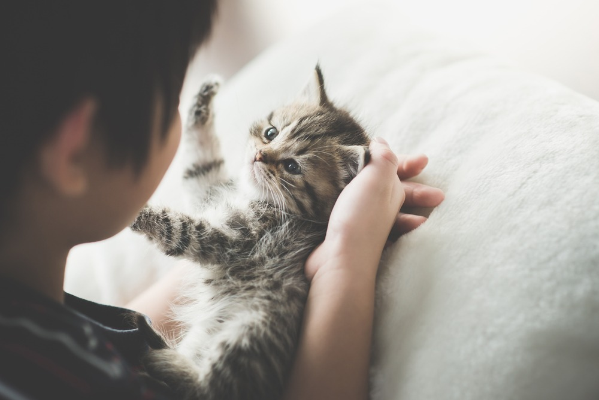
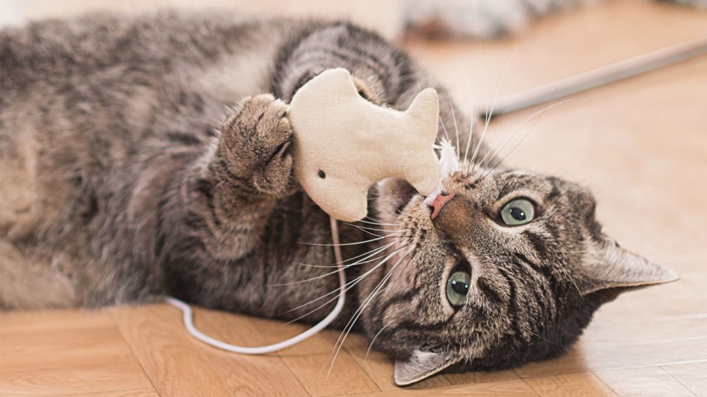
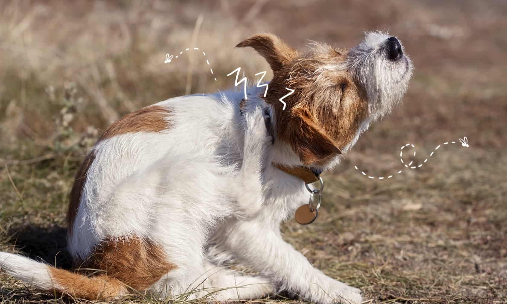

Novos Produtos
Ofertas Especiais
Dicas

Alimentação saudável para gatos
Ofereça uma dieta equilibrada para manter seu gato em forma e saudável.
Saiba mais

Como dar banho em uma chinchila
As chinchilas tomam banhos de pó ao invés de água. Use um pó específico para chinchilas.
Saiba mais

Como escovar os dentes do seu pet
Aprenda a escovar os dentes do seu pet de forma segura e sem estresse.
Saiba mais

Dicas para cuidar de filhotes
Saiba como garantir uma boa nutrição e conforto para o seu novo filhote.
Saiba mais

Brinquedos que seu gato vai adorar
Descubra os melhores brinquedos para manter seu gato entretido e ativo.
Saiba mais

Sinais de que seu cachorro pode estar com pulgas ou alergias
Fique atento aos sinais como coceira constante, mordidas nas patas ou agitação. Consulte um veterinário para identificar a causa e encontrar o melhor tratamento.
Saiba maisAlimentação saudável para gatos
Uma alimentação equilibrada para gatos deve incluir proteínas de alta qualidade, gorduras
saudáveis, carboidratos e todos os nutrientes essenciais para a saúde do seu gato. Evite
alimentar seu gato com comida humana ou produtos ricos em sal e gordura.
Como dar banho em uma chinchila
As chinchilas não tomam banho de água como outros animais. Elas tomam banhos de pó, usando um pó
específico que remove o excesso de óleo e sujeira de sua pelagem. Certifique-se de usar um pó de
qualidade adequado para chinchilas.
Como escovar os dentes do seu pet
A saúde bucal do seu pet é importante! Para escovar os dentes dele, use uma escova de dentes e
creme dental específicos para animais. Escove suavemente para evitar desconforto e premie seu
pet após a escovação para incentivar o comportamento.
Dicas para cuidar de filhotes
Os filhotes precisam de uma alimentação rica em nutrientes para crescer fortes e saudáveis. Além
disso, certifique-se de que o filhote tenha um lugar confortável e seguro para dormir, e agende
visitas regulares ao veterinário para vacinas e check-ups.
Brinquedos que seu gato vai adorar
Os gatos adoram brinquedos interativos que imitam a caça, como varinhas com penas e brinquedos
que se movem sozinhos. Brinquedos de laser também são ótimos para manter seu gato ativo e
entretido por longos períodos.
Sinais de que seu cachorro pode estar com pulgas ou alergias
Cachorros podem demonstrar sinais de pulgas ou alergias coçando-se excessivamente, mordendo
patas ou ficando mais irritados do que o normal. Verifique sempre a pelagem do seu pet e
consulte um veterinário se houver suspeita.